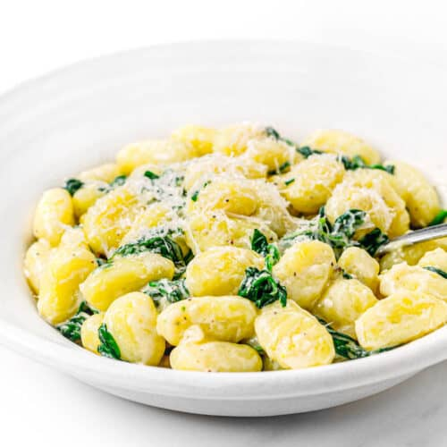

Gnocchi

Description
Gnocchi is simple to make with just three ingredients: mashed potato, flour, and egg. This recipe is one my family has used for generations.
Ingredients
Steps
- Boil Potatoes
- Mash potato, flour, and egg
- Knead until dough froms a ball
- Roll out and cut into small portions
- Boil Gnocchi
Main Menu